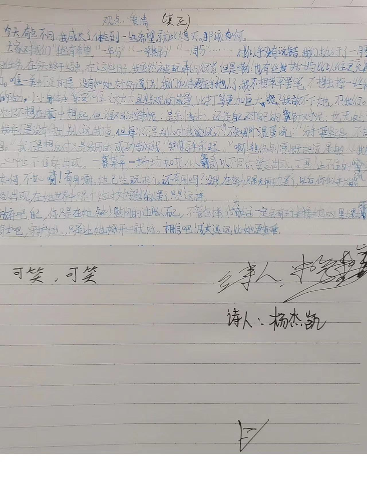
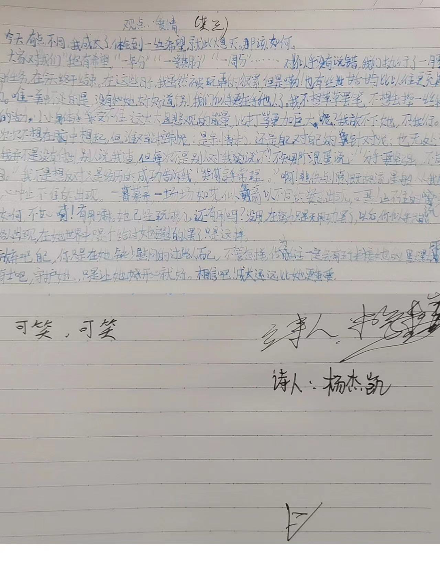
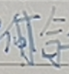
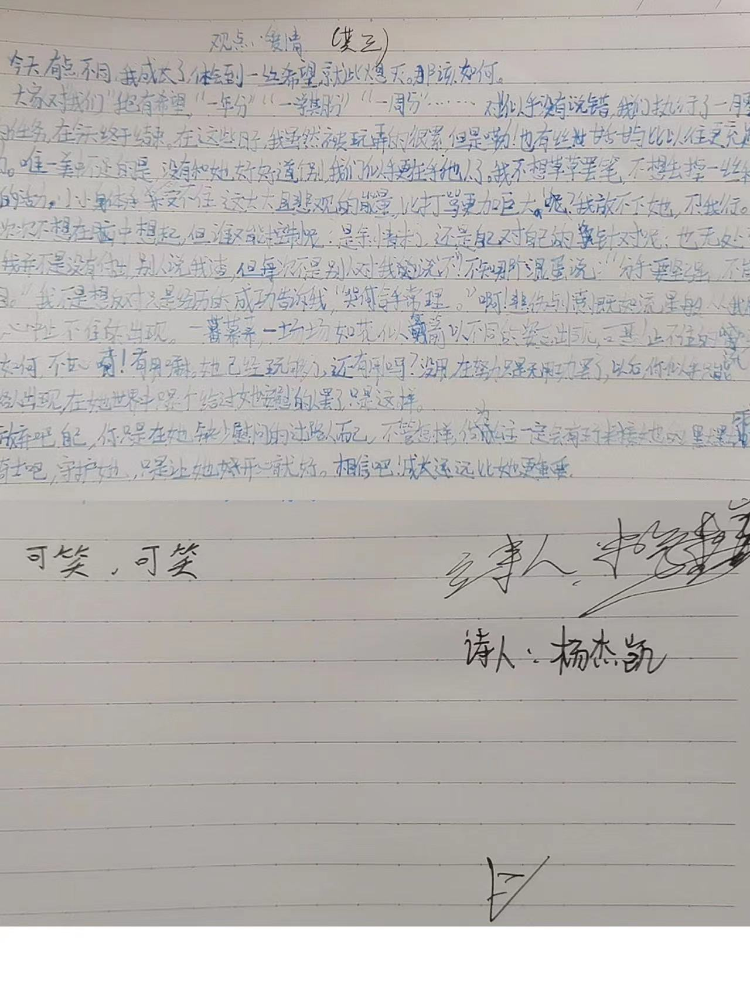

原文赏析
 

今天有点不同，我成长了，体会到一丝希望就此熄灭。那该如何。
大家对我们“抱有希望”，“一年分”“一学期分”“一周分”······对!似乎没有说错，
我们执行了一月零六天的任务，在今天终于结束。在这些日子，我虽然被玩弄的很累，
但是嘞！也有丝甘舌甘雨与
比以往更充足的精力。唯一美中不足的是，没有和她好好道个别，我们似乎更在乎他人了。
我不想草草罢笔，不想丢掉一丝稚嫩的活力，小小身体承受不住这大大且悲观的能量，
比打骂更加巨大。呢？我放不下她，不！“我行。”
我一次次不想在脑中想起，但谁又能控制呢？是余情未了，还是自己对自己的针对呢？
也无处可知。我并不是没有付出，别人说我渣，但每次不是别人对我说“不”！不知哪个混蛋说：
“分手要坚强，不能留泪。”我不是想反对只是经历的成功告诉我，“哭

手常理。”啊！悲伤与愤慨如流星般从从我脑中不，心中止不住的出现。一幕幕，
一场场如花似箭以不同的姿态出现，可恶！止不住的流呀！我该如何，不甘心啊！有用嘛。
她已经玩够了，还有用吗？没用，在努力只是无用功罢了，以后，你似乎只能已过路人出现，
在她世界中只是个给过她安慰的路人罢了，只是这样。
放弃吧自己，你只是在她缺少慰问的过路人而已，不管怎样，做为公主一定会有王子来接她的， 默默成为一个骑士吧，守护她，只是让她开心就好。相信吧！成长远远比她更重要。
